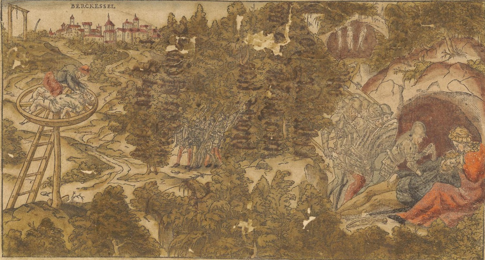

The Vile Deeds of Christman Grippertenius
2025-01-14
Title Page

“Die erst von dem Erschrocklichen Mörder Peter Nirschen/ wie er gericht und was er bekennt hat/ In dem 1581. Jahr zu Nüwen Marckt den 16. Septembris. Im Thon/ Es geht ein frischer Sommer daher. Die ander von einem Mörder Christman Gniperdoliga genannt/ welcher von seiner jugendt auff 964. Mörd gethan hat/ Im Thon Hilff GOtt das mir gelinge …”
Dreyerley Neüwezeitung. in Gesangweiß Link
This adventure is loosely inspired by the crimes of Christman Grippertenius and his associates Peter Stumpp and Peter Niers.
The adventure is meant for a party of 4-6 Level 4-8 characters. The adventure is written for Advanced OSE and was playtested with those rules. It should be equally usable with AD&D/OSRIC, Swords & Wizardry, LotFP or similar systems.
The player characters will confront a group of murderers that has been terrorizing the region of Bergkessel. The main inspiration for the adventure are the historical stories and murder ballads about Christman Genipperteinga,1 Peter Niers,2 and Peter Stumpp.3 The adventure does not strive for historical accuracy, merely to provide an engaging dark fantasy scenario for OSR gaming. If you’d like to read more about each of these three individuals, I recommend Historische Serienmörder. Menschliche Ungeheuer vom späten Mittelalter bis zum Ende des 19. Jahrhunderts, Kirchschlager, Michael (2014).
Content Warning
The stories that inspired the adventure are particularly grisly and go beyond what most tables would find acceptable for a gaming session. Use your own good judgment and feedback from your players to determine the degree to which you want to include certain elements. This adventure should still offer plenty of opportunity for engaging adventure, even if you make the main antagonists “regular” bandits. In this write up, I tried to strike a balance between retaining some of the abhorrent details, while only making veiled references to others. The adventure features themes of violence, implied threats of sexual violence, abduction, child murder, and body horror. Proceed at your own peril.